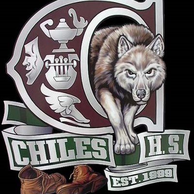

Education

Aug 2021 - Exp. May 2025
Yale University
Pursuing B.S./M.S. Computer Science and B.A. Economics
- GPA: 3.9/4.0; Major-4.0/4.0
- Activities and societies: Yale Men's Water Polo Team, Code Haven, Yale Computer Society, YHack, Yale Undergraduate Diversified Investments, Yale Machine Learning, Mathcounts Outreach
-
Relevant Coursework:
- CPSC 201: Introduction to Computer Science
- CPSC 202: Mathematical Tools for Computer Science
- CPSC 223: Data Structures and Programming Techniques
- CPSC 323: Introduction to Systems Programming & Computer Organization
- CPSC 327: Object-Oriented Programming
- CPSC 365: Algorithms
- CPSC 419: Full Stack Web Programming
- CPSC 484: Human-Computer Interaction
- CPSC 440: Database Design and Implementation (In Progress)
- CPSC 465: Theory of Distributed Systems (In Progress)
- CPSC 474: Computational Intelligence for Games (In Progress)
- ECON 117: Introduction to Data Analysis and Econometrics
- ECON 121: Intermediate Microeconomics
- ECON 122: Intermediate Macroeconomics
- ECON 123: Intermediate Data Analysis and Econometrics
- ECON 159: Game Theory (In Progress)
- ECON 365: Algorithms
Aug 2020 - May 2021
Florida State University
Dual Enrollment
- GPA: 4.0/4.0
-
Relevant Coursework:
- CGS 2100: Microcomputer Applications for Business/Economics
- CGS 3066: Web Programming and Design
- COP 2258: Problem-Solving w/ Object-Oriented Programming
- PSB 2000: Introduction to Brain and Behavior
- STA 2122: Introduction to Applied Statistics

Aug 2017 - May 2021
Lawton Chiles High School
High School Diploma
- GPA: UW - 4.0/4.0; W - 4.77/5.00
- Graduated Summa Cum Laude (Valedictorian)
- Activities and societies: Varsity Swimming (Team Captain, 2020 FHSAA Swimming State Championship Bronze Medalist - 200 Freestyle Relay, USA Swimming Futures Championships Qualifier - 400 Medley Relay), Mu Alpha Theta (Secretary), App Development Club (Vice President), Science Olympiad, National Honor Society
-
Relevant Coursework:
- AP Calculus BC (5)
- AP Chemistry (5)
- AP Computer Science A (5)
- AP Computer Science Principles (5)
- AP Environmental Science (5)
- AP Macroeconomics (5)
- AP Microeconomics (5)
- AP Music Theory (5)
- AP Physics 1 (5)
- AP Physics 2 (5)
- AP Physics C: Electricity and Magnetism (5)
- AP Psychology (5)
- AP Statistics (5)
- AP United States History (5)